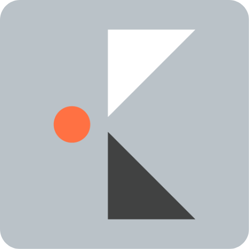

評価項目を先に出すことで、各論が散らばる前に読み手の視点を揃える。
章の切り替えは、番号と余白で静かに分ける。
表紙、間仕切り、本文のリズムを揃え、プレーン構図から企業フォーマットへ自然に変換できるようにする。
01
01現状整理Issue / Fact
02判断材料Option / Matrix
03実行計画Roadmap / Action

Company Format / Derived from Plain Business PPT
ロゴ由来の濃いグレーを主役にし、オレンジは細い強調だけに絞る。既存のプレーン構図を保ちながら、企業資料として使える密度に整える。

表紙、間仕切り、本文のリズムを揃え、プレーン構図から企業フォーマットへ自然に変換できるようにする。
各行は番号、論点、アウトプットで揃え、会議資料でも提案資料でもそのまま使える密度にする。
経営・提案・定例報告の冒頭で使う要約構図。カード内部の見出しと本文は中央寄せに近い配置で、余白だけが残らないようにする。
評価項目を先に出すことで、各論が散らばる前に読み手の視点を揃える。
根拠、数値、コメントを同じ粒度にし、後続ページに展開できる形で残す。
読み手がどこで合意していないかを見つけやすくするため、説明文ではなく構造として分ける。
資料作成の速度は上がっても、構図と表現が案件ごとに揺れてしまう。
プレーン構図と企業ルールが分かれておらず、都度手作業で調整している。
親プレーンは構造、企業フォーマットは色・ロゴ・密度の責務に分ける。
評価項目、選択肢、コメントを同じ読み順で並べる。ブランド表現は罫線とステータスの強弱に限定する。
| 判断軸 | Plan A | Plan B | 推奨 |
|---|---|---|---|
| 再利用性 | 中 | 高 | Plan B |
| 導入速度 | 高 | 中 | Plan A |
| ブランド整合 | 中 | 高 | Plan B |
| 運用負荷 | 低 | 低 | Tie |
KPIカードだけを上に詰めず、原因と次アクションまで含めて本文領域の中央に置く。
標準構図への適合率。残りはSVGと画像生成領域の扱いを追加検証する。
親プレーンのPB-00からPB-84を企業版に継承。
ロゴから抽出した濃いグレーを本文色に使用。
構図数が増えるほど、カード内部の文字量と中央配置の統制が重要になる。
台本入力時はタイトル、リード、本文、注記の役割を先に確定する。
PB-71のSVG構図を企業色に変換した例。線、ラベル、バーを最小限の濃淡で統一する。
前回バランスが崩れやすかったPB-67系の例。円周上の要素と中央メッセージの距離を均等にする。
PB-68系の原因分析。背骨を中央に置き、上下の原因量が釣り合うように調整する。
ロゴ色を塗りすぎず、線と薄い面だけで関係性を示す。中央の共通領域だけオレンジを淡く使う。
image2版の構図。本文だけを生成画像として扱い、検索性とPPT変換時のテキスト編集性を維持する。

濃いグレー、細いオレンジ、右上ロゴ、本文領域中央配置を基本ルールとして、提案・報告・講義資料へ展開する。